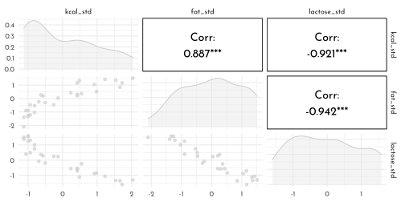
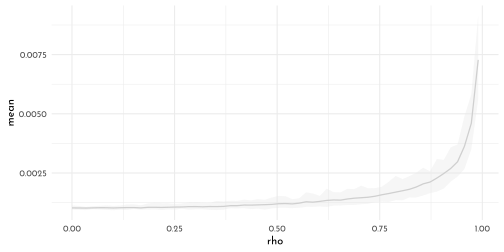
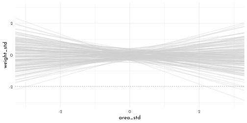
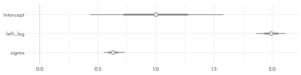

7 Rethinking: Chapter 6
The Haunted DAG & Causal Terror
by Richard McElreath, building on the Summaries by Solomon Kurz and Jake Thompson.
Simulating section-distortion (Berkson’s paradox)
n <- 200
p <- .1
set.seed(42)
data_sim <- tibble(newsworthy = rnorm(n),
trustworthy = rnorm(n),
score = newsworthy + trustworthy,
treshold = quantile(score, 1 - p),
selected = score >= treshold)
data_sim %>%
ggplot(aes(x = newsworthy, y = trustworthy, color = selected)) +
geom_smooth(data = data_sim %>% filter(selected),
method = "lm", se = FALSE, fullrange = TRUE, size = .5) +
geom_point(aes(fill = after_scale(clr_alpha(color))), shape = 21, size = 2.5) +
scale_color_manual(values = c(`TRUE` = clr1, `FALSE` = clr0d))+
coord_cartesian(xlim = range(data_sim$newsworthy) * 1.05,
ylim = range(data_sim$trustworthy) * 1.05,
expand = 0) +
coord_equal(ylim = range(data_sim$trustworthy) * 1.05) +
theme(legend.position = "bottom")
7.1 Multicolliniarity
Simulating multicollinear legs
library(rethinking)
n <- 100
set.seed(909)
data_legs <- tibble(
height = rnorm(n = n, mean = 10, sd = 2),
leg_proportion = runif(n, min = 0.4, max = 0.5),
left_leg = leg_proportion * height + rnorm(n, 0, .02),
right_leg = leg_proportion * height + rnorm(n, 0, .02),
)
model_legs_multicollinear <- quap(
flist = alist(
height ~ dnorm(mu, sigma),
mu <- alpha + beta_left * left_leg + beta_right * right_leg,
alpha ~ dnorm(10, 100),
beta_left ~ dnorm(2, 10),
beta_right ~ dnorm(2, 10),
sigma ~ dexp(1)
),
data = data_legs
)
precis(model_legs_multicollinear) %>%
as.matrix() %>%
round(digits = 2) %>%
knitr::kable()| mean | sd | 5.5% | 94.5% | |
|---|---|---|---|---|
| alpha | 0.98 | 0.28 | 0.53 | 1.44 |
| beta_left | 0.21 | 2.53 | -3.83 | 4.25 |
| beta_right | 1.78 | 2.53 | -2.26 | 5.83 |
| sigma | 0.62 | 0.04 | 0.55 | 0.69 |
precis(model_legs_multicollinear, depth = 2) %>%
as_tibble_rn() %>%
ggplot(aes(y = param)) +
geom_vline(xintercept = 0, lty = 3, color = rgb(0,0,0,.6)) +
geom_linerange(aes(xmin = `5.5%`,
xmax =`94.5%`), color = clr0d) +
geom_point(aes(x = mean),
shape = 21, size = 3 ,
color = clr0d, fill = clr0) +
scale_y_discrete(limits = c("sigma", "beta_right", "beta_left", "alpha")) +
theme(axis.title.y = element_blank())
leg_posterior_samples <- extract.samples(model_legs_multicollinear) %>% as_tibble()
p_cor <- leg_posterior_samples %>%
ggplot(aes(x = beta_right, y = beta_left)) +
geom_point(color = clr0d, fill = clr0, shape = 21, alpha = .5)
p_sum <- leg_posterior_samples %>%
ggplot(aes(x = beta_right + beta_left)) +
geom_vline(xintercept = 1/mean(data_legs$leg_proportion), color = clr_dark, linetype = 3) +
geom_density(color = clr0d, fill = clr0, alpha = .5, adjust = .4)
p_cor + p_sum
Milk example
data(milk)
data_milk <- milk %>%
as_tibble() %>%
drop_na(kcal.per.g:perc.lactose) %>%
mutate(across(where(is.double), standardize,
.names = "{str_remove(str_remove(.col,'perc.'),'.per.g')}_std"))Model fat only
model_milk_fat <- quap(
flist = alist(
kcal_std ~ dnorm(mu, sigma),
mu <- alpha + beta_fat * fat_std,
alpha ~ dnorm(0,.2),
beta_fat ~ dnorm(0,.5),
sigma ~ dexp(1)
),
data = data_milk
)
precis(model_milk_fat) %>%
as.matrix() %>%
round(digits = 2) %>%
knitr::kable()| mean | sd | 5.5% | 94.5% | |
|---|---|---|---|---|
| alpha | 0.00 | 0.08 | -0.12 | 0.12 |
| beta_fat | 0.86 | 0.08 | 0.73 | 1.00 |
| sigma | 0.45 | 0.06 | 0.36 | 0.54 |
Model lactose only
model_milk_lactose <- quap(
flist = alist(
kcal_std ~ dnorm(mu, sigma),
mu <- alpha + beta_lactose * lactose_std,
alpha ~ dnorm(0,.2),
beta_lactose ~ dnorm(0,.5),
sigma ~ dexp(1)
),
data = data_milk
)
precis(model_milk_lactose) %>%
as.matrix() %>%
round(digits = 2) %>%
knitr::kable()| mean | sd | 5.5% | 94.5% | |
|---|---|---|---|---|
| alpha | 0.00 | 0.07 | -0.11 | 0.11 |
| beta_lactose | -0.90 | 0.07 | -1.02 | -0.79 |
| sigma | 0.38 | 0.05 | 0.30 | 0.46 |
Multicollinear model
model_milk_multicollinear <- quap(
flist = alist(
kcal_std ~ dnorm(mu, sigma),
mu <- alpha + beta_fat * fat_std + beta_lactose * lactose_std,
alpha ~ dnorm(0,.2),
beta_fat ~ dnorm(0,.5),
beta_lactose ~ dnorm(0,.5),
sigma ~ dexp(1)
),
data = data_milk
)
precis(model_milk_multicollinear) %>%
as.matrix() %>%
round(digits = 2) %>%
knitr::kable()| mean | sd | 5.5% | 94.5% | |
|---|---|---|---|---|
| alpha | 0.00 | 0.07 | -0.11 | 0.11 |
| beta_fat | 0.24 | 0.18 | -0.05 | 0.54 |
| beta_lactose | -0.68 | 0.18 | -0.97 | -0.38 |
| sigma | 0.38 | 0.05 | 0.30 | 0.46 |
data_milk %>%
dplyr::select(kcal_std, fat_std, lactose_std) %>%
ggpairs(
lower = list(continuous = wrap(ggally_points, colour = clr0d, size = 1.5, alpha = .7)),
diag = list(continuous = wrap("densityDiag", fill = fll0, color = clr0d, adjust = .9)),
upper = list(continuous = wrap(ggally_cor, size = 5, color = "black", family = "Josefin sans"))
)
dagify(K ~ L + F,
L ~ D,
F ~ D,
coords = tibble(name = c("K", "L", "F", "D"),
x = c(.5, 0, 1, .5),
y = c(.6, 1, 1, 1))) %>%
fortify() %>%
mutate(stage = if_else(name == "K", "response",
if_else(name %in% c("L", "F"),
"predictor", "confounds"))) %>%
plot_dag(clr_in = clr3) +
scale_y_continuous(limits = c(.55, 1.05)) +
scale_x_continuous(limits = c(-.05, 1.05)) +
coord_equal()
Simulating Multicollinearity
simluate_collinearity <- function(seed = 42, r = .9, data = data_milk ){
data <- data %>%
mutate(x = rnorm(n = nrow(cur_data()),
mean = `perc.fat` * r,
sd = sqrt((1 - r ^ 2) * var(`perc.fat`))))
mod <- lm(kcal.per.g ~ perc.fat + x, data = data)
sqrt( diag( vcov(mod) ))[2]
}
# reapeat_simulation <- function(r = .9, n = 100){
# stddev <- replicate( n, simluate_collinearity(r))
# tibble(r = r, stddev_mean = mean(stddev), stddev_sd = sd(stddev))
# }
n_seed <- 100
n_rho <- 60
simulation_means <- crossing(seed = 1:n_seed,
rho = seq(from = 0, to = .99, length.out = n_rho)) %>%
mutate(parameter_sd = purrr::map2_dbl(seed, rho, simluate_collinearity)) %>%
group_by(rho) %>%
summarise(mean = mean(parameter_sd),
ll = quantile(parameter_sd, prob = .025),
ul = quantile(parameter_sd, prob = .975))
simulation_means %>%
ggplot(aes(x = rho, y = mean, ymin = ll, ymax = ul)) +
geom_smooth(stat = 'identity', size = .6, color = clr0d, fill = fll0)
7.2 Post-treatment bias
Simulating fungus data
n <- 100
set.seed(71)
data_fungus <- tibble(
h_0 = rnorm(n, 10, 2),
treatment = rep(0:1, each = n/2),
fungus = rbinom(n = n, size = 1, prob = .5 - treatment * .4 ),
h_1 = h_0 + rnorm(n, 5 - 3 * fungus)
)
precis(data_fungus) %>%
knit_precis()| param | mean | sd | 5.5% | 94.5% | histogram |
|---|---|---|---|---|---|
| h_0 | 9.96 | 2.10 | 6.57 | 13.08 | ▁▂▂▂▇▃▂▃▁▁▁▁ |
| treatment | 0.50 | 0.50 | 0.00 | 1.00 | ▇▁▁▁▁▁▁▁▁▇ |
| fungus | 0.23 | 0.42 | 0.00 | 1.00 | ▇▁▁▁▁▁▁▁▁▂ |
| h_1 | 14.40 | 2.69 | 10.62 | 17.93 | ▁▁▃▇▇▇▁▁ |
selecting a prior
precis(tibble(sim_p = rlnorm(1e4, 0, .25))) %>%
knit_precis()| param | mean | sd | 5.5% | 94.5% | histogram |
|---|---|---|---|---|---|
| sim_p | 1.04 | 0.26 | 0.67 | 1.5 | ▁▁▃▇▇▃▁▁▁▁▁▁ |
\[ \begin{array}{rclr} h_{1,i} & \sim & Normal( \mu_i, \sigma) & \textrm{[likelihood]}\\ \mu_i & = & h_{0,i} \times p & \textrm{[linear model]}\\ p & \sim & Log-Normal(0, 0.25) & \textrm{[$p$ prior]}\\ \sigma & \sim & Exponential(1) & \textrm{[$\sigma$ prior]} \end{array} \]
\(\rightarrow\) the main mass of the prior is between 40% shrinkage and 50% growth.
Model without treatment
model_fungus_no_treatment <- quap(
flist = alist(
h_1 ~ dnorm( mu, sigma ),
mu <- h_0 * p,
p ~ dlnorm( 0, .25 ),
sigma ~ dexp( 1 )
),
data = data_fungus
)
precis(model_fungus_no_treatment) %>%
knit_precis()| param | mean | sd | 5.5% | 94.5% |
|---|---|---|---|---|
| p | 1.43 | 0.02 | 1.40 | 1.45 |
| sigma | 1.79 | 0.13 | 1.59 | 1.99 |
Model with treatment and fungus (post-treatment variable)
\[ \begin{array}{rclr} h_{1,i} & \sim & Normal( \mu_i, \sigma) & \textrm{[likelihood]}\\ \mu_i & = & h_{0,i} \times p & \textrm{[linear model]}\\ p & = & \alpha + \beta_{T} T_{i} + \beta_{F} F_{i} & \textrm{[linear model]}\\ \alpha & \sim & Log-Normal(0, 0.25) & \textrm{[$\alpha$ prior]}\\ \beta_{T} & \sim & Normal(0, 0.5) & \textrm{[$\beta_{T}$ prior]}\\ \beta_{F} & \sim & Normal(0, 0.5) & \textrm{[$\beta_{F}$ prior]}\\ \sigma & \sim & Exponential(1) & \textrm{[$\sigma$ prior]} \end{array} \]
model_fungus_post_treatment <- quap(
flist = alist(
h_1 ~ dnorm( mu, sigma ),
mu <- h_0 * p,
p <- alpha + beta_treatment * treatment + beta_fungus * fungus,
alpha ~ dlnorm( 0, .2 ),
beta_treatment ~ dnorm(0,.5),
beta_fungus ~ dnorm(0,.5),
sigma ~ dexp( 1 )
),
data = data_fungus
)
precis(model_fungus_post_treatment) %>%
knit_precis()| param | mean | sd | 5.5% | 94.5% |
|---|---|---|---|---|
| alpha | 1.48 | 0.02 | 1.44 | 1.52 |
| beta_treatment | 0.00 | 0.03 | -0.05 | 0.05 |
| beta_fungus | -0.27 | 0.04 | -0.33 | -0.21 |
| sigma | 1.41 | 0.10 | 1.25 | 1.57 |
Model with treatment but without fungus
\[ \begin{array}{rclr} h_{1,i} & \sim & Normal( \mu_i, \sigma) & \textrm{[likelihood]}\\ \mu_i & = & h_{0,i} \times p & \textrm{[linear model]}\\ p & = & \alpha + \beta_{T} T_{i} & \textrm{[linear model]}\\ \alpha & \sim & Log-Normal(0, 0.25) & \textrm{[$\alpha$ prior]}\\ \beta_{T} & \sim & Normal(0, 0.5) & \textrm{[$\beta_{T}$ prior]}\\ \sigma & \sim & Exponential(1) & \textrm{[$\sigma$ prior]} \end{array} \]
model_fungus_only_treatment <- quap(
flist = alist(
h_1 ~ dnorm( mu, sigma ),
mu <- h_0 * p,
p <- a + beta_treatment * treatment,
a ~ dlnorm( 0, .25 ),
beta_treatment ~ dnorm(0,.5),
sigma ~ dexp( 1 )
),
data = data_fungus
)
precis(model_fungus_only_treatment) %>%
knit_precis()| param | mean | sd | 5.5% | 94.5% |
|---|---|---|---|---|
| a | 1.38 | 0.03 | 1.34 | 1.42 |
| beta_treatment | 0.08 | 0.03 | 0.03 | 0.14 |
| sigma | 1.75 | 0.12 | 1.55 | 1.94 |
d-separation
dagify("H_1" ~ H_0 + F,
F ~ T,
coords = tibble(name = c("H_0", "H_1", "F", "T"),
x = c(0, .5, .75, 1),
y = c(0, 0, 0, 0))) %>%
fortify() %>%
mutate(stage = if_else(name == "H_1", "response",
if_else(name %in% c("H_0", "F", "T"),
"predictor", "confounds")),
name = str_replace(name, "([A-Z])_([0-9])", "\\1\\[\\2\\]")) %>%
plot_dag(clr_in = clr3) +
scale_y_continuous(limits = c(-.05, .05)) +
scale_x_continuous(limits = c(-.05, 1.05)) +
coord_equal()
Directional Separation of H_1 and T occurs after conditioning on F:
library(dagitty)
impliedConditionalIndependencies("dag{ H_0 -> H_1 <- F <- T}")#> F _||_ H_0
#> H_0 _||_ T
#> H_1 _||_ T | Fdagify(H_1 ~ H_0 + M,
F ~ T,
F ~ M,
coords = tibble(name = c("H_0", "H_1", "M" , "F", "T"),
x = c(0, .5, .75, 1, 1.5),
y = c(1, 1, .7, 1, 1))) %>%
fortify() %>%
mutate(stage = if_else(name == "H_1", "response",
if_else(name %in% c("H_0", "F", "T"),
"predictor", "confounds")),
name = str_replace(name, "([A-Z])_([0-9])", "\\1\\[\\2\\]")) %>%
plot_dag(clr_in = clr3) +
scale_y_continuous(limits = c(.65, 1.05)) +
scale_x_continuous(limits = c(-.05, 1.55)) +
coord_equal()
n <- 1e4
set.seed(71)
data_moisture <- tibble(
h_0 = rnorm(n, 10, 2),
treatment = rep(0:1, each = n/2),
moisture = rbern(n),
fungus = rbinom(n = n, size = 1, prob = .5 - treatment * .4 + moisture * .4),
h_1 = h_0 + rnorm(n, 5 + 3 * moisture)
)
precis(data_moisture) %>%
knit_precis()| param | mean | sd | 5.5% | 94.5% | histogram |
|---|---|---|---|---|---|
| h_0 | 10.04 | 2.01 | 6.81 | 13.22 | ▁▁▁▂▇▇▂▁▁ |
| treatment | 0.50 | 0.50 | 0.00 | 1.00 | ▇▁▁▁▁▁▁▁▁▇ |
| moisture | 0.50 | 0.50 | 0.00 | 1.00 | ▇▁▁▁▁▁▁▁▁▇ |
| fungus | 0.50 | 0.50 | 0.00 | 1.00 | ▇▁▁▁▁▁▁▁▁▇ |
| h_1 | 16.55 | 2.69 | 12.22 | 20.84 | ▁▁▁▃▇▇▅▂▁▁ |
Moisture-Model with treatment and fungus (post-treatment variable)
model_moisture_post_treatment <- quap(
flist = alist(
h_1 ~ dnorm( mu, sigma ),
mu <- h_0 * p,
p <- alpha + beta_treatment * treatment + beta_fungus * fungus,
alpha ~ dlnorm( 0, .2 ),
beta_treatment ~ dnorm(0,.5),
beta_fungus ~ dnorm(0,.5),
sigma ~ dexp( 1 )
),
data = data_moisture
)
precis(model_moisture_post_treatment) %>%
knit_precis()| param | mean | sd | 5.5% | 94.5% |
|---|---|---|---|---|
| alpha | 1.53 | 0.00 | 1.52 | 1.54 |
| beta_treatment | 0.05 | 0.00 | 0.05 | 0.06 |
| beta_fungus | 0.13 | 0.00 | 0.12 | 0.14 |
| sigma | 2.13 | 0.02 | 2.11 | 2.16 |
Moisture-Model with treatment but without fungus
model_moisture_only_treatment <- quap(
flist = alist(
h_1 ~ dnorm( mu, sigma ),
mu <- h_0 * p,
p <- a + beta_treatment * treatment,
a ~ dlnorm( 0, .25 ),
beta_treatment ~ dnorm(0,.5),
sigma ~ dexp( 1 )
),
data = data_moisture
)
precis(model_moisture_only_treatment) %>%
knit_precis()| param | mean | sd | 5.5% | 94.5% |
|---|---|---|---|---|
| a | 1.62 | 0.00 | 1.62 | 1.63 |
| beta_treatment | 0.00 | 0.00 | 0.00 | 0.01 |
| sigma | 2.22 | 0.02 | 2.19 | 2.25 |
7.3 Collider Bias
# data_happy <- sim_happiness(seed = 1977, N_years = 66) %>%
# as_tibble()
progress_year <- function(data, year, max_age = 65, n_births = 20, aom = 18){
new_cohort <- tibble(
age = 1,
married = as.integer(0),
happiness = seq(from = -2, to = 2, length.out = n_births),
year_of_birth = year)
data %>%
mutate(age = age + 1) %>%
bind_rows(., new_cohort) %>%
mutate(married = if_else(age >= aom & married == 0,
rbern(n(), inv_logit(happiness - 4)),
married )) %>%
filter(age <= max_age)
}
sim_tidy <- function(seed = 1977, n_years = 1000, max_age = 65, n_births = 20, aom = 18){
set.seed(seed)
empty_tibble <- tibble(age = double(),
married = integer(),
happiness = double())
1:n_years %>%
reduce(.f = progress_year,
.init = empty_tibble,
max_age = max_age, n_births = n_births, aom = aom)
}
data_married <- sim_tidy(seed = 2021, n_years = 65, n_births = 21)
data_married %>%
mutate(married = factor(married,
labels = c("unmarried", "married"))) %>%
ggplot(aes(x = age, y = happiness, color = married)) +
geom_point(size = 1.75, shape = 21,
aes(fill = after_scale(clr_alpha(color)))) +
scale_color_manual(NULL, values = c(married = clr2, unmarried = clr0d)) +
scale_x_continuous(expand = c(.015, .015)) +
theme(panel.grid = element_blank(),
legend.position = "bottom")
\[ \begin{array}{rclr} happyness_{i} & \sim & Normal( \mu_i, \sigma) & \textrm{[likelihood]}\\ \mu_i & = & \alpha_{married[i]} + \beta_{age} age_{i} & \textrm{[linear model]}\\ \end{array} \]
data_married_adults <- data_married %>%
filter(age >= 18) %>%
mutate(age_trans = (age - 18)/ diff(c(18, 65)),
married_idx = married + 1L)
model_happy_married <- quap(
flist = alist(
happiness ~ dnorm(mu, sigma),
mu <- alpha[married_idx] + beta_age * age_trans,
alpha[married_idx] ~ dnorm( 0, 1 ),
beta_age ~ dnorm( 0, 2 ),
sigma ~ dexp( 1 )
),
data = data_married_adults
)
precis(model_happy_married, depth = 2) %>%
knit_precis()| param | mean | sd | 5.5% | 94.5% |
|---|---|---|---|---|
| alpha[1] | -0.21 | 0.06 | -0.31 | -0.11 |
| alpha[2] | 1.33 | 0.08 | 1.20 | 1.47 |
| beta_age | -0.81 | 0.11 | -0.99 | -0.64 |
| sigma | 0.97 | 0.02 | 0.94 | 1.01 |
model_happy <- quap(
flist = alist(
happiness ~ dnorm(mu, sigma),
mu <- alpha + beta_age * age_trans,
alpha ~ dnorm( 0, 1 ),
beta_age ~ dnorm( 0, 2 ),
sigma ~ dexp( 1 )
),
data = data_married_adults
)
precis(model_happy, depth = 2) %>%
knit_precis()| param | mean | sd | 5.5% | 94.5% |
|---|---|---|---|---|
| alpha | 0.00 | 0.07 | -0.12 | 0.12 |
| beta_age | 0.00 | 0.13 | -0.21 | 0.21 |
| sigma | 1.21 | 0.03 | 1.17 | 1.25 |
7.3.1 The haunted DAG
Education example (including Grandparents, Parents, Children and the unobserved Neighborhood)
p_dag1 <- dagify(C ~ P + G,
P ~ G,
coords = tibble(name = c("G", "P", "C"),
x = c(0, 1.5, 1.5),
y = c(1, 1, 0))) %>%
fortify() %>%
mutate(stage = if_else(name == "C", "response",
if_else(name %in% c("P", "G"),
"predictor", "confounds"))) %>%
plot_dag(clr_in = clr3) +
scale_y_continuous(limits = c(-.05, 1.05)) +
scale_x_continuous(limits = c(-.05, 1.55)) +
coord_equal()
p_dag2 <- dagify(C ~ P + G + U,
P ~ G + U,
coords = tibble(name = c("G", "P", "C", "U"),
x = c(0, 1.5, 1.5, 2),
y = c(1, 1, 0, .5))) %>%
fortify() %>%
mutate(stage = if_else(name == "C", "response",
if_else(name %in% c("P", "G"),
"predictor", "confounds"))) %>%
plot_dag(clr_in = clr3) +
scale_y_continuous(limits = c(-.05, 1.05)) +
scale_x_continuous(limits = c(-.05, 2.05)) +
coord_equal()
p_dag1 + p_dag2 + plot_annotation(tag_levels = "a") & theme(plot.tag = element_text(family = fnt_sel))n <- 200
beta_gp <- 1 # direct effect of G -> P
beta_gc <- 0 # direct effect of G -> C
beta_pc <- 1 # direct effect of P -> C
beta_U <- 2 # direct effect of U on both C and P
set.seed(1)
data_education <- tibble(
unobserved = 2 * rbern(n, .5) - 1,
grandparents = rnorm( n ),
parents = rnorm( n, beta_gp * grandparents + beta_U * unobserved),
children = rnorm( n, beta_gc * grandparents + beta_pc * parents + beta_U * unobserved)
)
model_education <- quap(
flist = alist(
children ~ dnorm(mu, sigma),
mu <- alpha + beta_pc * parents + beta_gc * grandparents,
alpha ~ dnorm( 0, 1 ),
c( beta_pc, beta_gc) ~ dnorm( 0, 1 ),
sigma ~ dexp(1)
),
data = data_education
)
precis(model_education) %>%
knit_precis()| param | mean | sd | 5.5% | 94.5% |
|---|---|---|---|---|
| alpha | -0.12 | 0.10 | -0.28 | 0.04 |
| beta_pc | 1.79 | 0.04 | 1.72 | 1.86 |
| beta_gc | -0.84 | 0.11 | -1.01 | -0.67 |
| sigma | 1.41 | 0.07 | 1.30 | 1.52 |
data_education_plot <- data_education %>%
mutate(across(grandparents:children,
standardize,
.names = "{.col}_std")) %>%
mutate(parents_inner = between(parents_std,
left = quantile(parents_std, probs = .45),
right = quantile(parents_std, probs = .60)))
data_education_plot %>%
ggplot(aes(x = grandparents_std, y = children_std)) +
geom_smooth(data = data_education_plot %>% filter(parents_inner),
method = "lm", se = FALSE, size = .5, color = clr_dark, fullrange = TRUE) +
geom_point(aes(color = factor(unobserved),
fill = after_scale(clr_alpha(color,.8)),
shape = parents_inner),
size = 2.5) +
scale_color_manual(values = c(clr0d, clr2), guide = "none") +
scale_shape_manual(values = c(`FALSE` = 1, `TRUE` = 21), guide = "none") +
coord_equal()
model_education_resolved <- quap(
flist = alist(
children ~ dnorm(mu, sigma),
mu <- alpha + beta_pc * parents + beta_gc * grandparents + beta_u * unobserved,
alpha ~ dnorm( 0, 1 ),
c( beta_pc, beta_gc, beta_u ) ~ dnorm( 0, 1 ),
sigma ~ dexp(1)
),
data = data_education
)
precis(model_education_resolved) %>%
knit_precis()| param | mean | sd | 5.5% | 94.5% |
|---|---|---|---|---|
| alpha | -0.12 | 0.07 | -0.24 | -0.01 |
| beta_pc | 1.01 | 0.07 | 0.91 | 1.12 |
| beta_gc | -0.04 | 0.10 | -0.20 | 0.11 |
| beta_u | 2.00 | 0.15 | 1.76 | 2.23 |
| sigma | 1.02 | 0.05 | 0.94 | 1.10 |
7.3.2 Shutting the Backdoor
The four elements that construct DAGs:
p_dag1 <- dagify(
X ~ Z,
Y ~ Z,
coords = tibble(name = c("X", "Y", "Z"),
x = c(0, 1, .5),
y = c(1, 1, 0))) %>%
fortify() %>%
mutate(stage = if_else(name == "", "response",
if_else(name %in% c("X", "Y", "Z"),
"predictor", "confounds"))) %>%
plot_dag(clr_in = clr3) +
ggtitle("Fork")
p_dag2 <- dagify(
Z ~ X,
Y ~ Z,
coords = tibble(name = c("X", "Y", "Z"),
x = c(0, 1, .5),
y = c(1, 0, .5))) %>%
fortify() %>%
mutate(stage = if_else(name == "", "response",
if_else(name %in% c("X", "Y", "Z"),
"predictor", "confounds"))) %>%
plot_dag(clr_in = clr3) +
ggtitle("Pipe")
p_dag3 <- dagify(
Z ~ X + Y,
coords = tibble(name = c("X", "Y", "Z"),
x = c(0, 1, .5),
y = c(0, 0 , 1))) %>%
fortify() %>%
mutate(stage = if_else(name == "", "response",
if_else(name %in% c("X", "Y", "Z"),
"predictor", "confounds"))) %>%
plot_dag(clr_in = clr3) +
ggtitle("Collider")
p_dag4 <- dagify(
Z ~ X + Y,
D ~ Z,
coords = tibble(name = c("X", "Y", "Z", "D"),
x = c(0, 1, .5, .5),
y = c(0, 0 , 1, 0))) %>%
fortify() %>%
mutate(stage = if_else(name == "", "response",
if_else(name %in% c("X", "Y", "Z", "D"),
"predictor", "confounds"))) %>%
plot_dag(clr_in = clr3) +
ggtitle("Collider")
p_dag1 +
p_dag2 +
p_dag3 +
p_dag4 +
plot_annotation(tag_levels = "a") +
plot_layout(nrow = 1) &
coord_fixed(ratio = .6) &
scale_y_continuous(limits = c(-.1, 1.1)) &
scale_x_continuous(limits = c(-.1, 1.1)) &
theme(plot.title = element_text(hjust = .5, family = fnt_sel),
plot.tag = element_text(family = fnt_sel))- a. Fork: \(X \perp \!\!\! \perp Y | Z\)
- b. Pipe: \(X \perp \!\!\! \perp Y | Z\)
- c. Collider: \(X \perp \!\!\! \perp Y\), but \(X \not\!\perp\!\!\!\perp Y | Z\)
- d. Descendant: \(X \perp \!\!\! \perp Y\), but \(X \not\!\perp\!\!\!\perp Y | Z\) (to a lesser extent)
7.3.3 Two Roads
dag_roads <- dagify(
U ~ A,
X ~ U,
Y ~ X + C,
C ~ A,
B ~ U + C,
exposure = "X",
outcome = "Y",
coords = tibble(name = c("U", "A", "B", "C", "X", "Y"),
x = c(0, .5, .5, 1, 0, 1),
y = c(.7, 1, .4 , .7, 0, 0)))
dag_roads %>%
fortify() %>%
mutate(stage = if_else(name == "Y", "response",
if_else(name %in% c("X", "A", "B", "C"),
"predictor", "confounds"))) %>%
plot_dag(clr_in = clr3) +
coord_fixed(ratio = .6) &
scale_y_continuous(limits = c(-.1, 1.1)) &
scale_x_continuous(limits = c(-.1, 1.1)) &
theme(plot.title = element_text(hjust = .5, family = fnt_sel),
plot.tag = element_text(family = fnt_sel))
adjustmentSets(dag_roads,exposure = "X", outcome = "Y")#> { C }
#> { A }
#> { U }dag_roads <- dagitty( "dag {
U [unobserved]
X -> Y
X <- U <- A -> C -> Y
U -> B <- C
}" )
adjustmentSets(dag_roads,exposure = "X", outcome = "Y")#> { C }
#> { A }7.3.4 Backdoor Waffles
dag_waffles <- dagify(
D ~ A + M + W,
A ~ S,
M ~ A + S,
W ~ S,
exposure = "W",
outcome = "D",
coords = tibble(name = c("S", "A", "M", "W", "D"),
x = c(0, 0, .5, 1, 1),
y = c(1, 0, .5 , 1, 0)))
dag_waffles %>%
fortify() %>%
mutate(stage = if_else(name == "D", "response",
if_else(name %in% c("W", "A", "M", "S"),
"predictor", "confounds"))) %>%
plot_dag(clr_in = clr3) +
coord_fixed(ratio = .6) &
scale_y_continuous(limits = c(-.1, 1.1)) &
scale_x_continuous(limits = c(-.1, 1.1)) &
theme(plot.title = element_text(hjust = .5, family = fnt_sel),
plot.tag = element_text(family = fnt_sel))
adjustmentSets(dag_waffles)#> { A, M }
#> { S }Test the implications of the DAG by investigating the conditional independencies implied by the DAG in the real data (by conditioning on the respective variables):
impliedConditionalIndependencies(dag_waffles)#> A _||_ W | S
#> D _||_ S | A, M, W
#> M _||_ W | SExporting models and data for re-use
library(rlang)
chapter6_models <- env(
data_legs = data_legs,
model_legs_multicollinear = model_legs_multicollinear,
data_milk = data_milk,
model_milk_fat = model_milk_fat,
model_milk_lactose = model_milk_lactose,
model_milk_multicollinear = model_milk_multicollinear,
data_fungus = data_fungus,
model_fungus_no_treatment = model_fungus_no_treatment,
model_fungus_post_treatment = model_fungus_post_treatment,
model_fungus_only_treatment = model_fungus_only_treatment,
data_moisture = data_moisture,
model_moisture_post_treatment = model_moisture_post_treatment,
model_moisture_only_treatment = model_moisture_only_treatment,
data_married_adults = data_married_adults,
model_happy_married = model_happy_married,
model_happy = model_happy,
data_education = data_education,
model_education = model_education,
model_education_resolved = model_education_resolved
)
write_rds(chapter6_models, "envs/chapter6_models.rds")7.4 Homework
E1
- multicollinearity (including two highly correlated predictors, so that a ridge of explanatory combinations prevents the precise estimate of both)
- post-treatment bias (masking an association by assuming all efects are caused by an intermediate descendant)
- collider bias (introducing an association as a selection effect)
E2
Fruit mass as a function of FF and crown area
FF \(\rightarrow\) Fruit mass \(\leftarrow\) crown area
E3
In all cases, we wonder about the influence of \(X\) on \(Y\). The elemental confounds influence how conditioning on \(Z\) (or \(D\)) effects our inference.
- The Fork (\(X \leftarrow Z \rightarrow Y\)): \(X \perp \!\!\! \perp Y | Z\), but \(X \not\!\perp\!\!\!\perp Y\)
- The Pipe (\(X \rightarrow Z \rightarrow Y\)): \(X \perp \!\!\! \perp Y | Z\), but \(X \not\!\perp\!\!\!\perp Y\)
- The Collider (\(X \rightarrow Z \leftarrow Y\)): \(X \perp \!\!\! \perp Y\), but \(X \not\!\perp\!\!\!\perp Y | Z\)
- The Descendant (\(X \rightarrow Z \leftarrow Y; Z \rightarrow D\), \(X \rightarrow Z \rightarrow Y; Z \rightarrow D\)): conditioning on \(D\) has the same (slightly weaker) effect like conditioning on \(Z\)
E4
As bias sample acts like selection for a specific value of a trait (eg. an article was selected for publication). This is implicitly conditioning on a third variable (also like eg. the 45-60 percentile of parents).
M1
dag_roads_v <- dagify(
U ~ A,
X ~ U,
Y ~ X + C + V,
C ~ A + V,
B ~ U + C,
exposure = "X",
outcome = "Y",
coords = tibble(name = c("U", "A", "B", "C", "X", "Y", "V"),
x = c(0, .5, .5, 1, 0, 1, 1.3),
y = c(.7, 1, .4 , .7, 0, 0, .35)))
dag_roads_v %>%
fortify() %>%
mutate(stage = if_else(name == "Y", "response",
if_else(name %in% c("X", "A", "B", "C"),
"predictor", "confounds"))) %>%
plot_dag(clr_in = clr3) +
coord_fixed(ratio = .6) &
scale_y_continuous(limits = c(-.1, 1.4)) &
scale_x_continuous(limits = c(-.1, 1.4)) &
theme(plot.title = element_text(hjust = .5, family = fnt_sel),
plot.tag = element_text(family = fnt_sel))
adjustmentSets(dag_roads_v, exposure = "X", outcome = "Y")#> { C, V }
#> { A }
#> { U }dag_roads_v <- dagitty( "dag {
U [unobserved]
V [unobserved]
X -> Y
X <- U <- A -> C -> Y
U -> B <- C
Y <- V -> C
}" )
adjustmentSets(dag_roads_v, exposure = "X", outcome = "Y")#> { A }… there are now \(x + 1\) paths.
Condition on A, since conditioning on C would open the collider between A and V allowing for the flow of information through the backdoor V.
M2
dagify(
Z ~ X,
Y ~ Z,
exposure = "X",
outcome = "Y",
coords = tibble(name = c("X", "Y", "Z"),
x = c(0, 1, .5),
y = c(0, 0, 0))) %>%
fortify() %>%
mutate(stage = if_else(name == "Y", "response",
if_else(name %in% c("X", "Z"),
"predictor", "confounds"))) %>%
plot_dag(clr_in = clr3) +
coord_fixed(ratio = .6) &
scale_y_continuous(limits = c(-.1, .1)) &
scale_x_continuous(limits = c(-.1, 1.1)) &
theme(plot.title = element_text(hjust = .5, family = fnt_sel),
plot.tag = element_text(family = fnt_sel))
n <- 1e4
data_sim_multicol <- tibble(x = rnorm(n),
z = rnorm(n, mean = x, sd = .05),
y = rnorm(n, mean = z))
data_sim_multicol %>%
ggpairs(
lower = list(continuous = wrap(ggally_points, colour = clr0d, size = 1.5, alpha = .7)),
diag = list(continuous = wrap("densityDiag", fill = fll0, color = clr0d, adjust = .9)),
upper = list(continuous = wrap(ggally_cor, size = 5, color = "black", family = "Josefin sans"))
)
model_sim_multicol <- quap(
flist = alist(
y ~ dnorm(mu, sigma),
mu <- alpha + beta_x * x + beta_z * z,
alpha ~ dnorm( 0, .2 ),
beta_x ~ dnorm( 0, .5),
beta_z ~ dnorm( 0, .5),
sigma ~ dexp(1)
),
data = data_sim_multicol
)
precis(model_sim_multicol) %>%
knit_precis()| param | mean | sd | 5.5% | 94.5% |
|---|---|---|---|---|
| alpha | -0.01 | 0.01 | -0.03 | 0.00 |
| beta_x | -0.10 | 0.17 | -0.38 | 0.17 |
| beta_z | 1.12 | 0.17 | 0.84 | 1.39 |
| sigma | 1.00 | 0.01 | 0.98 | 1.01 |
precis(model_sim_multicol, depth = 2) %>%
as_tibble_rn() %>%
ggplot(aes(y = param)) +
geom_vline(xintercept = 0, lty = 3, color = rgb(0,0,0,.6)) +
geom_linerange(aes(xmin = `5.5%`,
xmax =`94.5%`), color = clr0d) +
geom_point(aes(x = mean),
shape = 21, size = 3 ,
color = clr0d, fill = clr0) +
scale_y_discrete(limits = c("sigma", "beta_z", "beta_x", "alpha")) +
theme(axis.title.y = element_blank())
Here the effect of \(Z\) on \(Y\) is not obscured by including \(X\). The difference is that here we are breaking a pipe by conditioning on \(Z\).
M3
dag_h1 <- dagify(
X ~ Z,
Y ~ X + Z + A,
Z ~ A,
exposure = "X",
outcome = "Y",
coords = tibble(name = c("X", "Y", "Z", "A"),
x = c(0, 1, .5, 1),
y = c(0, 0, .7, .7)))
dag_h2 <- dagify(
Z ~ X,
Y ~ X + Z + A,
Z ~ A,
exposure = "X",
outcome = "Y",
coords = tibble(name = c("X", "Y", "Z", "A"),
x = c(0, 1, .5, 1),
y = c(0, 0, .7, .7)))
dag_h3 <- dagify(
X ~ A,
Y ~ X,
Z ~ X + Y + A,
exposure = "X",
outcome = "Y",
coords = tibble(name = c("X", "Y", "Z", "A"),
x = c(0, 1, .5, 0),
y = c(0, 0, .7, .7)))
dag_h4 <- dagify(
X ~ A,
Y ~ X + Z,
Z ~ X + A,
exposure = "X",
outcome = "Y",
coords = tibble(name = c("X", "Y", "Z", "A"),
x = c(0, 1, .5, 0),
y = c(0, 0, .7, .7)))
list(dag_h1, dag_h2,
dag_h3, dag_h4) %>%
purrr::map(.f = function(dag){
dag %>%
fortify() %>%
mutate(stage = if_else(name == "Y", "response",
if_else(name %in% c("X", "Z", "A"),
"predictor", "confounds")))}) %>%
purrr::map(plot_dag, clr_in = clr3) %>%
wrap_plots() +
plot_annotation(tag_levels = "a") &
coord_fixed(ratio = .6) &
scale_y_continuous(limits = c(-.1, .8)) &
scale_x_continuous(limits = c(-.1, 1.1)) &
theme(plot.title = element_text(hjust = .5, family = fnt_sel),
plot.tag = element_text(family = fnt_sel))
- a. condition on \(Z\) to close both backdoor paths into \(Y\)
- b. none (the information flow through \(Z\) is causal and thus desired, and \(A\) is blocked by the collider in \(Z\))
- c. none - there are no open backdoors into \(Y\)
- d. condition on \(A\) to enable the information from desired (causal) information from \(Z\) while removing the undesired information from \(A\)
list(dag_h1, dag_h2,
dag_h3, dag_h4) %>%
purrr::map(adjustmentSets)#> [[1]]
#> { Z }
#>
#> [[2]]
#> {}
#>
#> [[3]]
#> {}
#>
#> [[4]]
#> { A }H1
data(WaffleDivorce)
data_waffle <- WaffleDivorce %>%
as_tibble() %>%
drop_na(everything()) %>%
mutate(across(where(is.double), standardize,
.names = "{str_to_lower(.col)}_std"),
waffle_std = standardize(WaffleHouses)) %>%
dplyr::select(Location,MedianAgeMarriage, Marriage, Divorce, WaffleHouses, South,
medianagemarriage_std, marriage_std, divorce_std, waffle_std)
dag_waffles <- dagify(D ~ A + M + W,
M ~ A + S,
A ~ S,
W ~ S,
exposure = "W",
outcome = "D",
coords = tibble(name = c("S", "A", "M", "D", "W"),
x = c(0, 0, .5, 1, 1),
y = c(1, 0, .5, 0, 1)))
dag_waffles %>%
fortify() %>%
mutate(stage = if_else(name == "D", "response",
if_else(name %in% c("A", "M", "S", "W"),
"predictor", "confounds"))) %>%
plot_dag(clr_in = clr3) +
scale_y_continuous(limits = c(-.1, 1.1)) +
coord_fixed(ratio = .6)
adjustmentSets(dag_waffles)#> { A, M }
#> { S }\(\rightarrow\) there are four paths from \(W\) to \(D\) - the only causal one being \(W \rightarrow D\). To close the other three, we can condition on \(S\) which will close two different forks, efectiffley removing all non-causaul backdoor paths.
model_waffle <- quap(
flist = alist(
divorce_std ~ dnorm(mu, sigma),
mu <- alpha[South] + beta_w * waffle_std,
alpha[South] ~ dnorm(0, .5),
beta_w ~ dnorm(0, .5),
sigma ~ dexp(1)
),
data = data_waffle
)
precis(model_waffle, depth = 2) %>%
knit_precis()| param | mean | sd | 5.5% | 94.5% |
|---|---|---|---|---|
| alpha[1] | 0.00 | 0.13 | -0.21 | 0.21 |
| alpha[2] | 0.00 | 0.50 | -0.80 | 0.80 |
| beta_w | 0.24 | 0.13 | 0.03 | 0.45 |
| sigma | 0.95 | 0.09 | 0.80 | 1.10 |
precis(model_waffle, depth = 2) %>%
as_tibble_rn() %>%
ggplot(aes(y = param)) +
geom_vline(xintercept = 0, lty = 3, color = rgb(0,0,0,.6)) +
geom_linerange(aes(xmin = `5.5%`,
xmax =`94.5%`), color = clr0d) +
geom_point(aes(x = mean),
shape = 21, size = 3 ,
color = clr0d, fill = clr0) +
scale_y_discrete(limits = c("sigma", "beta_w", "alpha[2]", "alpha[1]")) +
theme(axis.title.y = element_blank())
\(\rightarrow\) The total causal influence of \(W\) on \(D\) should be in the order of 0.24 standard deviations.
H2
impliedConditionalIndependencies(dag_waffles)#> A _||_ W | S
#> D _||_ S | A, M, W
#> M _||_ W | Smodel_waffel_test1 <- quap(
flist = alist(
medianagemarriage_std ~ dnorm(mu, sigma),
mu <- alpha[South] + beta_w * waffle_std,
alpha[South] ~ dnorm(0, .2),
beta_w ~ dnorm(0, .5),
sigma ~ dexp(1)
),
data = data_waffle
)
precis(model_waffel_test1, depth = 2) %>%
knit_precis()| param | mean | sd | 5.5% | 94.5% |
|---|---|---|---|---|
| alpha[1] | 0.00 | 0.11 | -0.18 | 0.18 |
| alpha[2] | 0.00 | 0.20 | -0.32 | 0.32 |
| beta_w | -0.11 | 0.13 | -0.32 | 0.10 |
| sigma | 0.97 | 0.10 | 0.82 | 1.13 |
\(\rightarrow\) the influence of \(W\) on \(A\) is moderate (-0.11), with a wide posterior distribution both on either side of zero (-0.32, 0.1). Based on this we can not find a definitive influence from \(W\) on \(A\),
model_waffel_test2 <- quap(
flist = alist(
divorce_std ~ dnorm(mu, sigma),
mu <- alpha[South] + beta_a * medianagemarriage_std + beta_m * marriage_std + beta_w * waffle_std,
alpha[South] ~ dnorm(0, .2),
c(beta_a, beta_m, beta_w) ~ dnorm(0, .5),
sigma ~ dexp(1)
),
data = data_waffle
)
precis(model_waffel_test2, depth = 2) %>%
knit_precis()| param | mean | sd | 5.5% | 94.5% |
|---|---|---|---|---|
| alpha[1] | 0.00 | 0.10 | -0.15 | 0.15 |
| alpha[2] | 0.00 | 0.20 | -0.32 | 0.32 |
| beta_a | -0.58 | 0.15 | -0.82 | -0.35 |
| beta_m | -0.05 | 0.15 | -0.29 | 0.19 |
| beta_w | 0.18 | 0.11 | 0.01 | 0.35 |
| sigma | 0.77 | 0.08 | 0.64 | 0.89 |
waffel_test2_samples <- extract.samples(model_waffel_test2) %>%
as_tibble() %>%
mutate(contrast = alpha[,1] - alpha[,2])
waffel_test2_samples_quantiles <- tibble(x = quantile(waffel_test2_samples$contrast, prob = c(.055, .5, .945)),
percentile = c("lower", "median", "upper")) %>%
pivot_wider(names_from = "percentile", values_from = "x")
waffel_test2_samples %>%
ggplot(aes(x = contrast)) +
geom_density(color = clr0d, fill = fll0) +
geom_pointrange(data = waffel_test2_samples_quantiles,
aes(xmin = lower, x = median, xmax = upper, y = 0), color = clr0d, fill = clr0, shape = 21)
\(\rightarrow\) the influence of \(S\) on \(D\) is moderate after conditioning on \(A\), \(M\) and \(W\) (median of the contrast effect: 0.0026)
model_waffel_test3 <- quap(
flist = alist(
marriage_std ~ dnorm(mu, sigma),
mu <- alpha[South] + beta_w * waffle_std,
alpha[South] ~ dnorm(0, .2),
beta_w ~ dnorm(0, .5),
sigma ~ dexp(1)
),
data = data_waffle
)
precis(model_waffel_test3, depth = 2) %>%
knit_precis()| param | mean | sd | 5.5% | 94.5% |
|---|---|---|---|---|
| alpha[1] | 0.00 | 0.11 | -0.18 | 0.18 |
| alpha[2] | 0.00 | 0.20 | -0.32 | 0.32 |
| beta_w | 0.03 | 0.13 | -0.19 | 0.24 |
| sigma | 0.98 | 0.10 | 0.83 | 1.13 |
\(\rightarrow\) the influence of \(W\) on \(M\) is moderate (0.03), with a wide posterior distribution both on either side of zero (-0.19, 0.24). Based on this we can not find a definitive influence from \(W\) on \(M\),
H3

From Wikipedia:
Weights range from 2.2–14 kg
data(foxes)
data_fox <- foxes %>%
as_tibble() %>%
drop_na(everything()) %>%
mutate(across(-group, standardize,
.names = "{str_to_lower(.col)}_std"))
fox_weight_range <- tibble(weight = c(2.2, 14),
weight_std = (weight - mean(data_fox$weight))/ sd(data_fox$weight))
dag_fox <- dagify(
W ~ F + G,
G ~ F,
F ~ A,
exposure = "A",
outcome = "W",
coords = tibble(name = c("W", "F", "G", "A"),
x = c(.5, 0, 1, .5),
y = c(0, .5, .5, 1)))
dag_fox %>%
fortify() %>%
mutate(stage = if_else(name == "W", "response",
if_else(name %in% c("A", "F", "G"),
"predictor", "confounds"))) %>%
plot_dag(clr_in = clr2) +
scale_y_continuous(limits = c(-.1, 1.1)) +
coord_fixed(ratio = .6)
adjustmentSets(dag_fox)#> {}model_fox_area <- quap(
flist = alist(
weight_std ~ dnorm(mu, sigma),
mu <- alpha + beta_area * area_std,
alpha ~ dnorm(0,.2),
beta_area ~ dnorm(0, .25),
sigma ~ dexp(1)
),
data = data_fox
)
extract.prior(model_fox_area) %>%
as_tibble() %>%
filter(row_number() < 150) %>%
ggplot() +
geom_abline(aes(slope = beta_area, intercept = alpha), color = clr_alpha(clr0d)) +
geom_hline(data = fox_weight_range, aes(yintercept = weight_std),
color = clr_dark, linetype = 3) +
scale_x_continuous(limits = c(-3,3)) +
scale_y_continuous(limits = c(-3,3)) +
labs(x = "area_std", y = "weight_std")
precis(model_fox_area) %>%
knit_precis()| param | mean | sd | 5.5% | 94.5% |
|---|---|---|---|---|
| alpha | 0.00 | 0.08 | -0.13 | 0.13 |
| beta_area | 0.02 | 0.09 | -0.12 | 0.16 |
| sigma | 0.99 | 0.06 | 0.89 | 1.09 |
The slope of area very close to zero with the posterior distribution heavy on either side 🤷
H4
adjustmentSets(dag_fox, exposure = "F", outcome = "W")#> {}model_fox_food <- quap(
flist = alist(
weight_std ~ dnorm(mu, sigma),
mu <- alpha + beta_food * avgfood_std,
alpha ~ dnorm(0,.2),
beta_food ~ dnorm(0, .25),
sigma ~ dexp(1)
),
data = data_fox
)
precis(model_fox_food, depth = 2) %>%
knit_precis()| param | mean | sd | 5.5% | 94.5% |
|---|---|---|---|---|
| alpha | 0.00 | 0.08 | -0.13 | 0.13 |
| beta_food | -0.02 | 0.09 | -0.16 | 0.12 |
| sigma | 0.99 | 0.06 | 0.89 | 1.09 |
H5
adjustmentSets(dag_fox, exposure = "G", outcome = "W")#> { F }… we need to condition on \(F\).
model_fox_group <- quap(
flist = alist(
weight_std ~ dnorm(mu, sigma),
mu <- alpha + beta_food * avgfood_std + beta_group * groupsize_std,
alpha ~ dnorm(0,.2),
c(beta_food, beta_group) ~ dnorm(0, .5),
sigma ~ dexp(1)
),
data = data_fox
)
precis(model_fox_group, depth = 2) %>%
knit_precis()| param | mean | sd | 5.5% | 94.5% |
|---|---|---|---|---|
| alpha | 0.00 | 0.08 | -0.13 | 0.13 |
| beta_food | 0.48 | 0.18 | 0.19 | 0.76 |
| beta_group | -0.57 | 0.18 | -0.86 | -0.29 |
| sigma | 0.94 | 0.06 | 0.84 | 1.04 |
precis(model_fox_group, depth = 2) %>%
as_tibble_rn() %>%
ggplot(aes(y = param)) +
geom_vline(xintercept = 0, lty = 3, color = rgb(0,0,0,.6)) +
geom_linerange(aes(xmin = `5.5%`,
xmax =`94.5%`), color = clr0d) +
geom_point(aes(x = mean),
shape = 21, size = 3 ,
color = clr0d, fill = clr0) +
scale_y_discrete(limits = c("sigma", "beta_group", "beta_food", "alpha")) +
theme(axis.title.y = element_blank())
H6
dag <- dagify(
OD ~ FD + GS + DD,
FD ~ DD + FF,
exposure = "FD",
outcome = "OD",
coords = tibble(name = c("FF", "FD", "DD", "OD", "GS"),
x = c(0, .5, 0, 1, 1.5),
y = c(1, .5, 0, .5, .5)))
dag %>%
tidy_dagitty() %>%
mutate(stage = if_else(name == "OD", "response",
"predictor")) %>%
plot_dag(clr_in = clr3) +
coord_fixed(ratio = .6)adjustmentSets(dag)#> { DD }impliedConditionalIndependencies(dag)#> DD _||_ FF
#> DD _||_ GS
#> FD _||_ GS
#> FF _||_ GS
#> FF _||_ OD | DD, FDH7
n <- 1e4
data_fruit <- tibble(
fruitfall = rnorm(n),
dipteryx_density = rnorm(n),
fruit_density = rnorm(n, mean = fruitfall + dipteryx_density),
group_size = rnorm(n),
od_area = rlnorm(n = n, meanlog = fruit_density + dipteryx_density - group_size)) %>%
mutate(across(everything(), standardize, .names = "{.col}_std"))
model_fruit <- quap(
flist = alist(
od_area_std ~ dnorm(mu, sigma),
mu <- alpha + beta_fd * fruit_density_std + beta_dd * dipteryx_density_std,
alpha ~ dnorm(0, .2),
c(beta_fd, beta_dd) ~ dnorm(0, .5),
sigma ~ dexp(1)
),
data = data_fruit
)
precis(model_fruit) %>%
knit_precis()| param | mean | sd | 5.5% | 94.5% |
|---|---|---|---|---|
| alpha | 0.00 | 0.01 | -0.02 | 0.02 |
| beta_fd | 0.12 | 0.01 | 0.10 | 0.14 |
| beta_dd | 0.05 | 0.01 | 0.04 | 0.07 |
| sigma | 0.99 | 0.01 | 0.98 | 1.00 |
7.5 {brms} section
7.5.1 Multicolliniarity
Legs Model
brms_c6_model_legs_multicollinear <- brm(
data = data_legs,
family = gaussian,
height ~ 1 + left_leg + right_leg,
prior = c(prior(normal(10, 100), class = Intercept),
prior(normal(2, 10), class = b),
prior(exponential(1), class = sigma)),
iter = 2000, warmup = 1000,
sample_prior = TRUE,
chains = 4, cores = 4,
seed = 42,
file = "brms/brms_c6_model_legs_multicollinear")library(tidybayes)
library(ggdist)
as_draws_df(brms_c6_model_legs_multicollinear) %>%
dplyr::select(starts_with("b"), sigma) %>%
as_tibble() %>%
set_names(x = . , nm = names(.) %>% str_remove("b_")) %>%
pivot_longer(everything()) %>%
ggplot(aes(x = value, y = reorder(name, value))) +
geom_vline(xintercept = 0, color = clr_dark, linetype = 3) +
stat_pointinterval(color = clr0dd, fill = clr0, shape = 21) +
scale_y_discrete(limits = c("sigma", "left_leg", "Intercept")) +
theme_minimal(base_family = fnt_sel) +
theme(axis.title = element_blank())
Check various seeds to illustrate the difficulty to fit the legs jointly:
simulate_leg_data <- function(seed = 42){
n <- 100
set.seed(seed)
data_legs <- tibble(
height = rnorm(n = n, mean = 10, sd = 2),
leg_proportion = runif(n, min = 0.4, max = 0.5),
left_leg = leg_proportion * height + rnorm(n, 0, .02),
right_leg = leg_proportion * height + rnorm(n, 0, .02),
)
tibble(seed = seed,
fit = list(update(brms_c6_model_legs_multicollinear,
newdata = data_legs,
seed = 42, refresh = 0)))
}
1:4 %>%
map_dfr(simulate_leg_data) %>%
mutate(posterior = purrr::map(fit, as_draws_df )) %>%
unnest(cols = posterior) %>%
dplyr::select(seed, starts_with("b"), sigma) %>%
set_names(x = . , nm = names(.) %>% str_remove("b_")) %>%
pivot_longer(-seed) %>%
ggplot(aes(x = value, y = reorder(name, value))) +
geom_vline(xintercept = 0, color = clr_dark, linetype = 3) +
stat_halfeye(aes(fill_ramp = stat(cut_cdf_qi(cdf, .width = c(0.66, 0.95,1)))),
fill = fll0dd, adjust = .7, normalize = "groups", height = .8) +
scale_fill_ramp_discrete(range = c(.85, 0.15), guide = "none") +
scale_y_discrete(limits = c("sigma", "left_leg", "right_leg", "Intercept")) +
coord_cartesian(ylim = c(0.9, 5),
expand = 0) +
facet_wrap(seed ~ ., ncol = 1, labeller = label_both) +
theme_minimal(base_family = fnt_sel) +
theme(axis.title = element_blank())
p_ridge <- as_draws_df(brms_c6_model_legs_multicollinear) %>%
as_tibble() %>%
dplyr::select(starts_with("b"), sigma) %>%
set_names(x = . , nm = names(.) %>% str_remove("b_")) %>%
ggplot(aes(x = left_leg, y = right_leg)) +
geom_point(color = clr0d, fill = fll0, shape = 21, size = .6)
p_sum <- as_draws_df(brms_c6_model_legs_multicollinear) %>%
as_tibble() %>%
dplyr::select(starts_with("b"), sigma) %>%
set_names(x = . , nm = names(.) %>% str_remove("b_")) %>%
ggplot(aes(x = left_leg + right_leg)) +
stat_halfeye(aes(fill_ramp = stat(cut_cdf_qi(cdf, .width = c(0.66, 0.95,1)))),
fill = fll0dd, adjust = .7, normalize = "groups", height = .8) +
scale_fill_ramp_discrete(range = c(.85, 0.15), guide = "none")
p_ridge + p_sum
Model single leg
brms_c6_model_model_leg <- brm(
data = data_legs,
family = gaussian,
height ~ 1 + left_leg,
prior = c(prior(normal(10, 100), class = Intercept),
prior(normal(2, 10), class = b),
prior(exponential(1), class = sigma)),
iter = 2000, warmup = 1000,
sample_prior = TRUE,
chains = 4, cores = 4,
seed = 42,
file = "brms/brms_c6_model_leg")
as_draws_df(brms_c6_model_model_leg) %>%
dplyr::select(starts_with("b"), sigma) %>%
as_tibble() %>%
set_names(x = . , nm = names(.) %>% str_remove("b_")) %>%
pivot_longer(everything()) %>%
ggplot(aes(x = value, y = reorder(name, value))) +
geom_vline(xintercept = 0, color = clr_dark, linetype = 3) +
stat_pointinterval(color = clr0dd, fill = clr0, shape = 21) +
scale_y_discrete(limits = c("sigma", "left_leg", "Intercept")) +
theme_minimal(base_family = fnt_sel) +
theme(axis.title = element_blank())
Multicollinear milk model
brms_c6_model_milk_multicollinear_1 <- brm(
data = data_milk,
family = gaussian,
kcal_std ~ 1 + lactose_std,
prior = c(prior(normal(0, 0.2), class = Intercept),
prior(normal(0, 0.5), class = b),
prior(exponential(1), class = sigma)),
iter = 2000, warmup = 1000,
chains = 4, cores = 4,
seed = 42,
file = "brms/brms_c6_model_milk_multicollinear1"
)
brms_c6_model_milk_multicollinear_2 <- update(
brms_c6_model_milk_multicollinear_1,
newdata = data_milk,
formula = kcal_std ~ 1 + fat_std,
seed = 42,
file = "brms/brms_c6_model_milk_multicollinear2"
)
brms_c6_model_milk_multicollinear_3 <- update(
brms_c6_model_milk_multicollinear_1,
newdata = data_milk,
formula = kcal_std ~ 1 + lactose_std + fat_std,
seed = 42,
file = "brms/brms_c6_model_milk_multicollinear3"
)
posterior_summary(brms_c6_model_milk_multicollinear_3) %>%
round(digits = 2) %>%
knitr::kable()| Estimate | Est.Error | Q2.5 | Q97.5 | |
|---|---|---|---|---|
| b_Intercept | 0.00 | 0.07 | -0.15 | 0.14 |
| b_lactose_std | -0.67 | 0.20 | -1.06 | -0.27 |
| b_fat_std | 0.25 | 0.20 | -0.15 | 0.65 |
| sigma | 0.41 | 0.06 | 0.32 | 0.55 |
| lp__ | -17.30 | 1.51 | -21.09 | -15.42 |
7.5.2 Post-treatment bias
brms_c6_model_fungus_no_treatment <- brm(
data = data_fungus,
family = gaussian,
h_1 ~ 0 + h_0,
prior = c(prior(lognormal(0, 0.25), class = b, lb = 0),
prior(exponential(1), class = sigma)),
iter = 2000, warmup = 1000,
chains = 4, cores = 4,
seed = 42,
file = "brms/brms_c6_model_fungus_no_treatment"
)
mixedup::summarise_model(brms_c6_model_fungus_no_treatment)#> Group Effect Variance SD SD_2.5 SD_97.5 Var_prop
#> Residual 3.33 1.82 1.58 2.10 1.00
#> Term Value SE Lower_2.5 Upper_97.5
#> h_0 1.43 0.02 1.39 1.46To fit the original model also in {brms}, we are translating
\[ \begin{array}{rclr} \mu_i & = & h_{0,i} \times p & \textrm{[linear model]}\\ p & = & \alpha + \beta_{T} T_{i} + \beta_{F} F_{i} & \textrm{[linear model]}\\ \end{array} \]
into
\[ \begin{array}{rclr} \mu_i & = & h_{0,i} \times ( \alpha + \beta_{T} T_{i} + \beta_{F} F_{i}) & \textrm{[linear model]}\\ \end{array} \]
\(\rightarrow\) beware of the non-linear {brms} syntax used here!
brms_c6_model_fungus_post_treatment <- brm(
data = data_fungus,
family = gaussian,
bf(h_1 ~ h_0 * (a + t * treatment + f * fungus),
a + t + f ~ 1,
nl = TRUE),
prior = c(prior(lognormal(0, 0.2), nlpar = a, lb = 0),
prior(normal(0, 0.5), nlpar = t),
prior(normal(0, 0.5), nlpar = f),
prior(exponential(1), class = sigma)),
iter = 2000, warmup = 1000,
chains = 4, cores = 4,
seed = 42,
file = "brms/brms_c6_model_fungus_post_treatment"
)
mixedup::summarise_model(brms_c6_model_fungus_post_treatment)#> Group Effect Variance SD SD_2.5 SD_97.5 Var_prop
#> Residual 2.09 1.45 1.26 1.67 1.00
#> Term Value SE Lower_2.5 Upper_97.5
#> a_Intercept 1.48 0.03 1.43 1.53
#> t_Intercept 0.00 0.03 -0.05 0.06
#> f_Intercept -0.27 0.04 -0.34 -0.19omitting fungus from the model:
brms_c6_model_fungus_only_treatment <- brm(
data = data_fungus,
family = gaussian,
bf(h_1 ~ h_0 * (a + t * treatment),
a + t ~ 1,
nl = TRUE),
prior = c(prior(lognormal(0, 0.2), nlpar = a, lb = 0),
prior(normal(0, 0.5), nlpar = t),
prior(exponential(1), class = sigma)),
iter = 2000, warmup = 1000,
chains = 4, cores = 4,
seed = 42,
file = "brms/brms_c6_model_fungus_only_treatment"
)
mixedup::summarise_model(brms_c6_model_fungus_only_treatment)#> Group Effect Variance SD SD_2.5 SD_97.5 Var_prop
#> Residual 3.18 1.78 1.56 2.04 1.00
#> Term Value SE Lower_2.5 Upper_97.5
#> a_Intercept 1.38 0.03 1.33 1.43
#> t_Intercept 0.09 0.04 0.02 0.16including moisture as a fork:
brms_c6_model_moisture_post_treatment <- update(
brms_c6_model_fungus_post_treatment,
newdata = data_moisture,
seed = 42,
file = "brms/brms_c6_model_moisture_post_treatment"
)
mixedup::summarise_model(brms_c6_model_moisture_post_treatment)#> Group Effect Variance SD SD_2.5 SD_97.5 Var_prop
#> Residual 4.54 2.13 2.10 2.16 1.00
#> Term Value SE Lower_2.5 Upper_97.5
#> a_Intercept 1.53 0.00 1.52 1.54
#> t_Intercept 0.05 0.00 0.05 0.06
#> f_Intercept 0.13 0.00 0.12 0.14brms_c6_model_moisture_only_treatment <- update(
brms_c6_model_fungus_only_treatment,
newdata = data_moisture,
seed = 42,
file = "brms/brms_c6_model_moisture_only_treatment"
)
mixedup::summarise_model(brms_c6_model_moisture_only_treatment)#> Group Effect Variance SD SD_2.5 SD_97.5 Var_prop
#> Residual 4.93 2.22 2.19 2.25 1.00
#> Term Value SE Lower_2.5 Upper_97.5
#> a_Intercept 1.62 0.00 1.61 1.63
#> t_Intercept 0.00 0.00 -0.01 0.017.5.3 Collider Bias
data_married_factor <- data_married_adults %>%
mutate(married_f = c("single", "married")[married + 1] %>% factor())
brms_c6_model_happy_married <-brm(
data = data_married_factor,
family = gaussian,
happiness ~ 0 + married_f + age_trans,
prior = c(prior(normal(0, 1), class = b, coef = married_fmarried),
prior(normal(0, 1), class = b, coef = married_fsingle),
prior(normal(0, 2), class = b, coef = age_trans),
prior(exponential(1), class = sigma)),
iter = 2000, warmup = 1000,
chains = 4, cores = 4,
seed = 42,
file = "brms/brms_c6_model_happy_married")
mixedup::summarise_model(brms_c6_model_happy_married)#> Group Effect Variance SD SD_2.5 SD_97.5 Var_prop
#> Residual 0.96 0.98 0.94 1.02 1.00
#> Term Value SE Lower_2.5 Upper_97.5
#> married_fmarried 1.34 0.08 1.18 1.50
#> married_fsingle -0.21 0.06 -0.33 -0.09
#> age_trans -0.81 0.11 -1.03 -0.61brms_c6_model_happy <-brm(
data = data_married_factor,
family = gaussian,
happiness ~ 0 + Intercept + age_trans,
prior = c(prior(normal(0, 1), class = b, coef = Intercept),
prior(normal(0, 2), class = b, coef = age_trans),
prior(exponential(1), class = sigma)),
iter = 2000, warmup = 1000,
chains = 4, cores = 4,
seed = 42,
file = "brms/brms_c6_model_happy")
mixedup::summarise_model(brms_c6_model_happy)#> Group Effect Variance SD SD_2.5 SD_97.5 Var_prop
#> Residual 1.47 1.21 1.16 1.27 1.00
#> Term Value SE Lower_2.5 Upper_97.5
#> age_trans 0.00 0.07 -0.13 0.13The haunted DAG
brms_c6_model_education <-brm(
data = data_education,
family = gaussian,
children ~ 0 + Intercept + parents + grandparents,
prior = c(prior(normal(0, 1), class = b),
prior(exponential(1), class = sigma)),
iter = 2000, warmup = 1000,
chains = 4, cores = 4,
seed = 42,
file = "brms/brms_c6_model_education")
mixedup::summarise_model(brms_c6_model_education)#> Group Effect Variance SD SD_2.5 SD_97.5 Var_prop
#> Residual 2.04 1.43 1.30 1.58 1.00
#> Term Value SE Lower_2.5 Upper_97.5
#> Intercept -0.12 0.10 -0.32 0.08
#> parents 1.79 0.04 1.70 1.88
#> grandparents -0.83 0.11 -1.04 -0.63brms_c6_model_education_resolved <- update(
brms_c6_model_education,
newdata = data_education,
formula = children ~ 0 + Intercept + parents + grandparents + unobserved,
seed = 42,
file = "brms/brms_c6_model_education_resolved"
)
mixedup::summarise_model(brms_c6_model_education_resolved)#> Group Effect Variance SD SD_2.5 SD_97.5 Var_prop
#> Residual 1.07 1.04 0.94 1.15 1.00
#> Term Value SE Lower_2.5 Upper_97.5
#> Intercept -0.12 0.07 -0.26 0.02
#> parents 1.01 0.07 0.88 1.15
#> grandparents -0.04 0.10 -0.24 0.15
#> unobserved 2.00 0.15 1.70 2.277.5.4 Summary
data_waffle <- data_waffle %>% mutate(south_f = factor(South))
brms_c6_model_waffle_1 <- brm(
data = data_waffle,
family = gaussian,
divorce_std ~ 1 + waffle_std,
prior = c(prior(normal(0, 0.2), class = Intercept),
prior(normal(0, 0.5), class = b),
prior(exponential(1), class = sigma)),
iter = 2000, warmup = 1000,
chains = 4, cores = 4,
seed = 42,
file = "brms/brms_c6_model_waffle_1")
brms_c6_model_waffle_2 <- brm(
data = data_waffle,
family = gaussian,
divorce_std ~ 1 + waffle_std + south_f,
prior = c(prior(normal(0, 0.2), class = Intercept),
prior(normal(0, 0.5), class = b),
prior(exponential(1), class = sigma)),
iter = 2000, warmup = 1000,
chains = 4, cores = 4,
seed = 42,
file = "brms/brms_c6_model_waffle_2")
brms_c6_model_waffle_3 <- brm(
data = data_waffle,
family = gaussian,
divorce_std ~ 1 + waffle_std + medianagemarriage_std + marriage_std,
prior = c(prior(normal(0, 0.2), class = Intercept),
prior(normal(0, 0.5), class = b),
prior(exponential(1), class = sigma)),
iter = 2000, warmup = 1000,
chains = 4, cores = 4,
seed = 42,
file = "brms/brms_c6_model_waffle_3")
brms_c6_model_waffle_4 <- brm(
data = data_waffle,
family = gaussian,
divorce_std ~ 1 + waffle_std + medianagemarriage_std,
prior = c(prior(normal(0, 0.2), class = Intercept),
prior(normal(0, 0.5), class = b),
prior(exponential(1), class = sigma)),
iter = 2000, warmup = 1000,
chains = 4, cores = 4,
seed = 42,
file = "brms/brms_c6_model_waffle_4")
brms_c6_model_waffle_5 <- brm(
data = data_waffle,
family = gaussian,
divorce_std ~ 1 + waffle_std + marriage_std,
prior = c(prior(normal(0, 0.2), class = Intercept),
prior(normal(0, 0.5), class = b),
prior(exponential(1), class = sigma)),
iter = 2000, warmup = 1000,
chains = 4, cores = 4,
seed = 42,
file = "brms/brms_c6_model_waffle_5")formula <- c(glue("d {mth('\U007E')} 1 + w"),
glue("d {mth('\U007E')} 1 + w + s"),
glue("d {mth('\U007E')} 1 + w + a + m"),
glue("d {mth('\U007E')} 1 + w + a"),
glue("d {mth('\U007E')} 1 + w + m"))
tibble(model = 1:5,
fit = str_c("brms_c6_model_waffle_", model)) %>%
mutate(y = str_c(model, ": ", formula),
post = purrr::map(fit, ~get(.) %>%
as_draws_df() %>%
dplyr::select(waffle_std = b_waffle_std))) %>%
unnest(post) %>%
ggplot(aes(x = waffle_std, y = y,
color = fit %in% c("brms_c6_model_waffle_2", "brms_c6_model_waffle_3"))) +
geom_vline(xintercept = 0, color = clr_dark, linetype = 3) +
stat_pointinterval(aes(fill = after_scale(clr_lighten(color))), shape = 21) +
scale_color_manual(values = c(clr0dd, clr2)) +
labs(x = str_c("*",mth("\U03B2"),"<sub>w</sub>*"),
y = NULL) +
coord_cartesian(xlim = c(-0.4, 0.6)) +
theme(axis.text.y = element_markdown(hjust = 0),
axis.title.x = element_markdown(),
legend.position = "none")